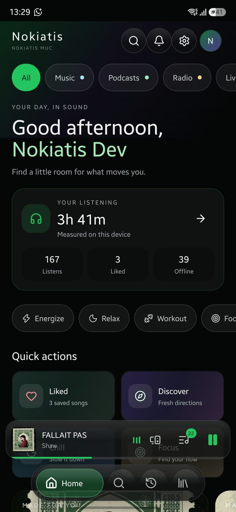
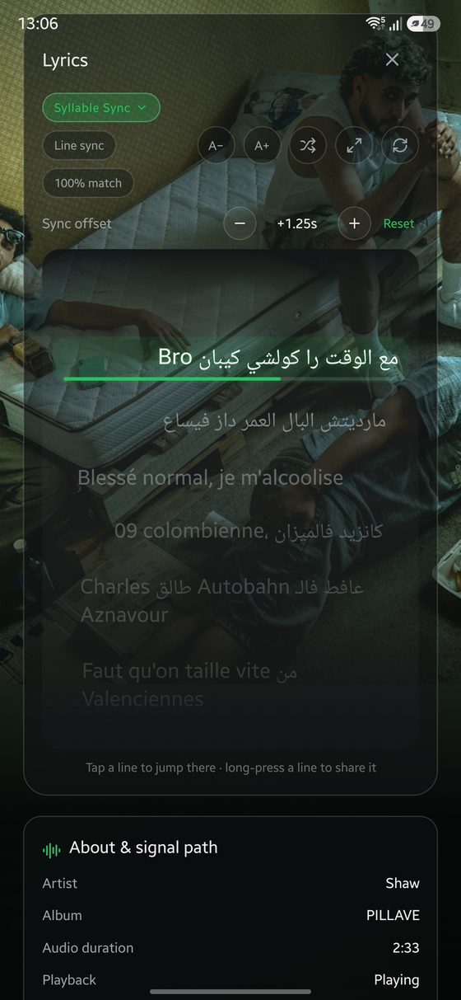
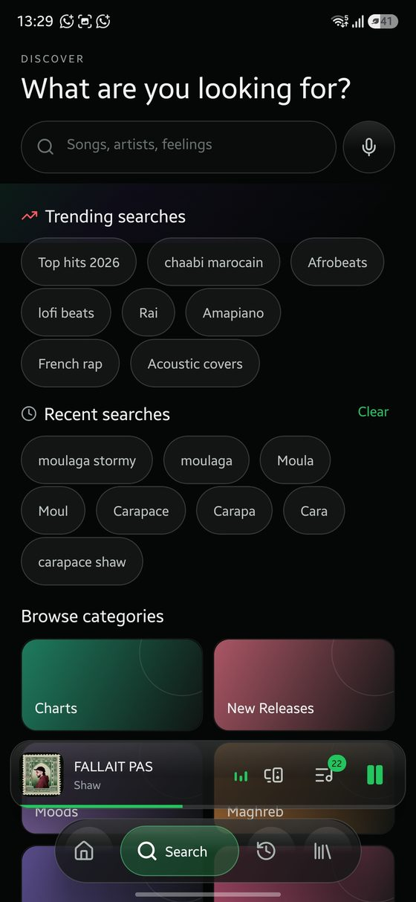
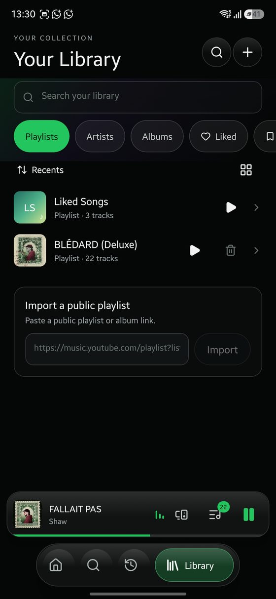
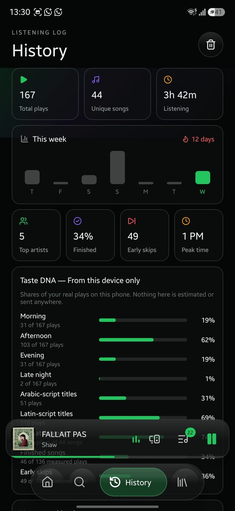
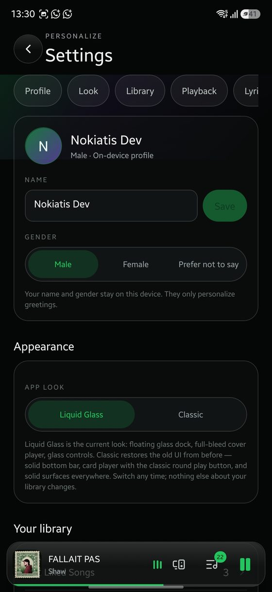
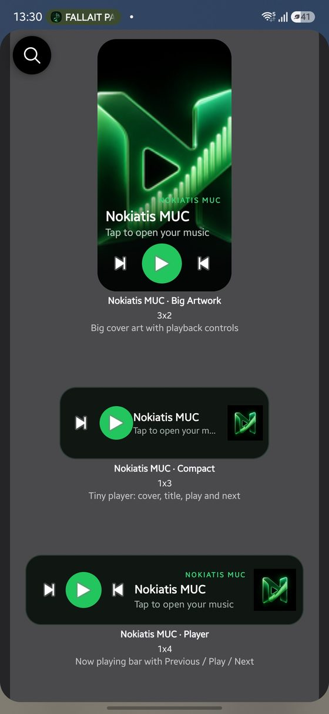

Nokiatis MUC is a fast, beautiful music player by Team Nokiatis — word-by-word synced lyrics, offline downloads, smart mixes made on your device, home-screen widgets and true background playback. Everything works with no account — and now an optional free Nokiatis Cloud account can sync your library across every device. Just press play.
This is the only official download page for Nokiatis MUC. Every build here is the original, signed by Team Nokiatis.

Designed around one idea: the music comes first, and the interface melts around it.
A floating glass dock, a full-bleed cover player and springy, touchable controls. Prefer the original look? One switch restores the classic UI.
Word-by-word synced lyrics gathered from several sources and matched to the exact recording you're hearing — with per-song source switching and timing fine-tune.
Every song has a Download button. Songs, albums and playlists save fast into your in-app Downloads and play with no connection at all.
Daily mixes, Song Radio, smart shuffle and a recommendation engine that learns from your plays, skips and likes — calculated on your phone, not in a cloud profile.
Music keeps playing with the screen off, with Previous / Play / Next on your lock screen and the app visible in Android's Active apps.
Player, Compact, Big Artwork and Quick Play (Liked Shuffle, Offline Mix, Radio, Discover) — control your music without opening the app.
Tap any artist to open their page with their catalogue and monthly listeners. Albums open, play, shuffle, download and save as complete collections.
Drift off while the volume gently fades to silence — after a few minutes or at the end of the song.
Listening stats, streaks and a Taste DNA breakdown computed from your real plays — on this device only, never sent anywhere.
Taken on a Galaxy S23 FE running the current version — what you see is exactly what you get. Swipe on mobile.
A greeting, your listening stats, moods and quick actions.

Syllable-by-syllable karaoke, multi-source, with your own timing offset.

Trending, recents and categories — songs, artists, feelings.

Playlists, artists, albums, Liked — plus public playlist import.

Plays, skips, streaks and how your taste breaks down.

On-device profile, Liquid Glass or Classic, and deep controls.
This button always gives you the newest official version. The details below update automatically with every release, so you can verify your file.
Scan this code with your Android phone to open this page there, then install in one tap. Or copy the link and send it to your phone.
Nokiatis MUC is not a virus and contains no malware. Because it is installed directly from this website instead of Google Play, Android shows a generic warning — here is exactly what that means and how to verify the app yourself.
Every official build is signed with the same Team Nokiatis key (certificate SHA-256 below). Android itself refuses to install an update signed by anyone else over your app.
DDA7F001A4DC1DA3A7C39C0A45C81010C0E66AD0A4A952F815E79EE698C1EFC6
The SHA-256 fingerprint and exact size of the current APK are published above and inside the app. Before installing any update, the app re-checks the size, the SHA-256 and the signature — a modified file is rejected automatically.
“Install unknown apps” and “This file might be harmful” appear for every app installed outside Google Play. They mean “Google Play didn't scan this”, not “a virus was found”. Google Play Protect can still scan Nokiatis MUC after install like any other app.
No advertising or analytics SDKs, and no account required. Your library, history and taste data stay on your device — an optional Nokiatis Cloud account syncs only your library row, to your own account. The app only contacts music and lyrics services, the official GitHub update feed and, if enabled, your cloud sync.
Choose the APK you downloaded. It is hashed locally in your browser — the file never leaves your device — and compared with the official SHA-256 above.
Nokiatis MUC installs directly, outside an app store — so Android asks your permission once. That's normal for every direct-download app.
Tap “Download APK” above. The file saves to your Downloads folder.
Tap the finished download and Android opens the installer.
If Android asks, allow your browser to “install unknown apps” — only the first time.
Tap Install, then Open. Pick a song and press play.
Long-press your home screen → Widgets → Nokiatis MUC → pick one. They stay in sync with what's playing, and Play resumes your last session even after Android closes the app.

Full-bleed cover art with Previous / Play / Next. Resizable.
Now-playing bar: cover, title, artist and full transport.
Cover, title, Play and Next for tight layouts.
One-tap mixes: Liked Shuffle, Offline Mix, Song Radio, Discover.
100% real numbers, reported anonymously by the app itself: a random per-install id, the app version and timestamps — nothing else, ever. Versions before 1.18.2 don't report.
Some phones (especially Samsung) aggressively stop background apps to save battery. Two one-time settings keep Nokiatis MUC playing for hours:
That's what shows your lock-screen player with Previous / Play / Next.
In the app: Settings → Lock screen controls → Allow unrestricted battery. On Samsung, also remove Nokiatis MUC from “Sleeping apps”.
Everything works signed out — no sign-up, no login, no server profile. The name you enter in Get Started never leaves your phone. If you opt into Nokiatis Cloud, only your library row is stored, protected by row-level security so only your signed-in account can read it.
Your library, playlists, downloads, history and the taste engine's learning live on the device. Export a backup any time from Settings.
Catalogue search, streaming, artwork and lyrics, and the official GitHub update check. If you turn on Nokiatis Cloud, library sync to your own account. Crash reports are written on-device and shared only if you tap Send. The optional anonymous usage heartbeat (Settings → Share anonymous usage statistics) sends only a random per-install id, the app version and timestamps — never your library, history or any personal data — and it feeds the live user counters on this page.
Yes — free to download and use, no subscription, and no account required. Every feature works signed out; the optional Nokiatis Cloud sync is free too.
No. Android warns about any app installed outside Google Play. See the Safety section above: one official Team Nokiatis signature, a published SHA-256 for every build, an instant on-page file check, and a VirusTotal link for this exact build.
No. Updates install over the previous version with the same signature, and Android keeps all app data — library, playlists, downloads, history and settings.
By design: releases fix bugs and refresh streaming sources that change over time, so old builds would slowly break. Updating takes under a minute and keeps everything.
Into the app's own Downloads section, ready for offline playback inside Nokiatis MUC. Use the Download button on any song, album or playlist.
That's your phone's battery saver. Allow notifications and set battery to Unrestricted — on Samsung also remove the app from Sleeping apps.
Not at the moment — Nokiatis MUC is Android-only (7.0 and newer).
No — it is entirely optional and the app is fully usable with no account. If you do create one (Settings → Cloud), your library, playlists, likes, history and listening stats sync across your devices: merging unions both sides without duplicating, and deletions are always respected. Sign out any time — your on-device library is never touched.
Open Settings → Diagnostics in the app and send the saved report, or file it on our crash-reports page: github.com/itzraynx/nokiatis-muc-crash-reports
Team Nokiatis, from Agadir, Morocco. This page and the official GitHub updates repository are the only official sources.
Nokiatis Cloud — an optional free account (Settings → Cloud) that syncs your whole library: likes, playlists, history and listening stats, across every device. Merges take the union of both sides, nothing duplicates, and deletions always win. The updater itself is repaired: forced updates finally arrive and install as designed. A beta channel is available from Settings → Updates — betas never lock the app and can always be skipped. And every feature still works with no account at all.
BETA · v1.17.0-beta.1
The app now asks, once, on first open: sign in to Nokiatis Cloud to save your data across phones — or continue as a guest and know the cost: guest data stays on this phone only and is lost if the app or its data is deleted. Sign in instead and everything — playlists, likes, downloads, history — syncs automatically from that moment. Share links for songs and playlists now travel in full Arabic. Betas never lock the app and can always be skipped.